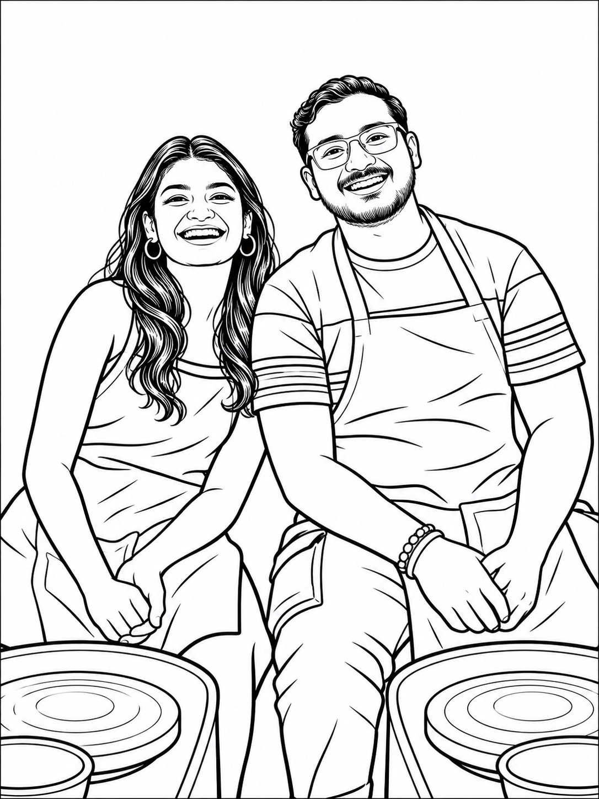

One attempted surprise, two very muddy artists, four little creations,
and a pottery studio that has officially stopped chasing us.

Two amateur potters · Four questionable masterpieces · One lovely day
A note from me to you
Remember our pottery date? The one I tried so hard to keep
a surprise, only for you to somehow crack it before I could
even properly surprise you?
I had this whole idea of us trying something new together,
getting our hands dirty, making a little mess, and taking
home something we'd made ourselves. And that's pretty much
exactly what happened.
Well, except for the clay that somehow ended up on my face,
the street food we devoured afterwards, and the fact that
I spent most of the day battling period cramps with a heat
patch, pretending I was perfectly fine. Very glamorous,
very artistic.
But we made FOUR pieces! Four! And I think we did
rather wonderfully, considering neither of us was exactly
a professional potter.
Although, there is a small administrative matter that
needs addressing.
The pieces we submitted for firing and glazing are still
waiting to be collected. It's been so long that the studio
has actually stopped sending us reminders. I think we've
officially been classified as a lost cause.
And the pieces we did bring home? They're sitting at your
flat, proudly unpainted, just as they have been for ages.
Honestly, I find that hilarious.
Maybe one day we'll finally finish them. Maybe we'll
collect the other two as well. Or maybe they'll continue
being the most long-running unfinished project of our
relationship.
But I hope we never rush to finish every little thing.
Because somewhere between the failed surprise, the clay,
the food, the cramps, and our very questionable pottery
skills, we made something much nicer than four ceramic
objects.
We made another day that belongs entirely to us.
And if nothing else, we now have proof that we can make
a mess together and still have a lovely time.
P.S. We really should collect those glazed pieces.
The studio has waited long enough. Please.
A little memory in motion
OUR POTTERY ADVENTURE, REPLAYED
Because somehow, going anywhere and trying anything with you
turns into the loveliest little adventure. Here's to more
messy experiments, silly dates, new experiences, and all
the little things we get to discover together. And guess what?
Our pottery babies are finally home!